4 Field of View Metadata
It is the first step in the Data Extraction workflow. It organizes the metadata of each field of view (FOV)—including file paths for all required inputs and decay information—into a single metadata file. This file is then used for numerical feature extraction, as well as for users’ own bookkeeping and troubleshooting.
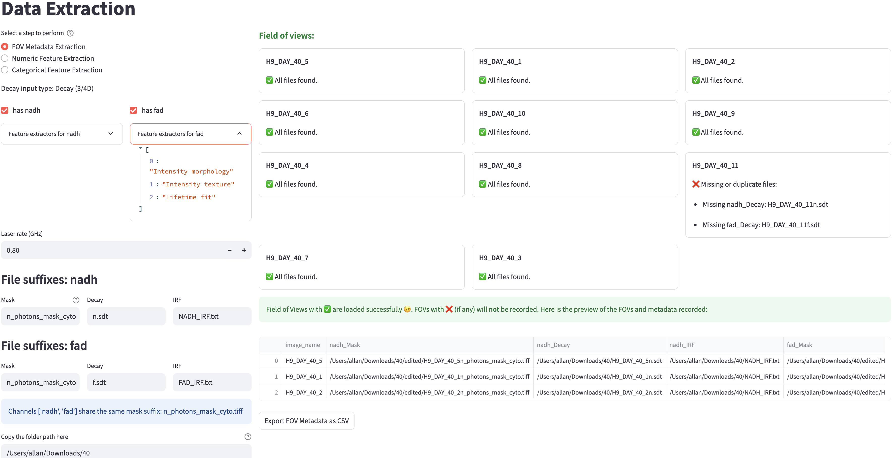
It is divided into two sections:
- The left 1/3 of the screen is the metadata configuration panel, inherited from the Data Extraction Configuration step.
- The right 2/3 shows the extraction status for all FOVs.
4.1 Metadata
Metadata are configured earlier in the Data Extraction Configuration step and copied here. Some fields remain editable for flexibility, while others are fixed to ensure usability. Non-editable fields can be modified in the Data Extraction Configuration step. After saving your modifications, return to this page and refresh it to see the changes.
4.1.1 Decay Type
See decay types for more details. The decay type is not editable here.
4.1.2 Channel Names
See channel name config for more details. The names are not editable here, though users can choose which channel to include.
4.1.3 Feature Extractors
See feature extractor config for more details. The feature extractors for each channel are shown but not editable here.
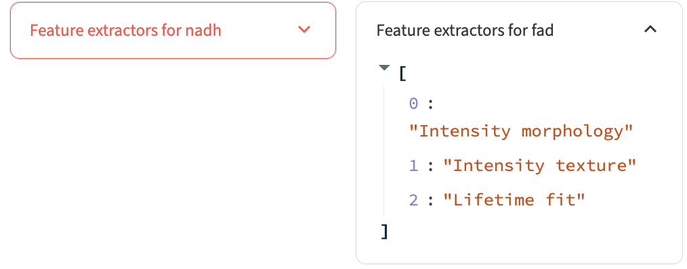
4.1.4 Decay Info
See decay info config for more details. The decay information is editable here.
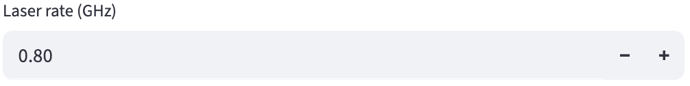
2D Decay-specific
Since the 2D decay file does not provide the duration and the number of time bins per laser pulse interval, users need to specify them.
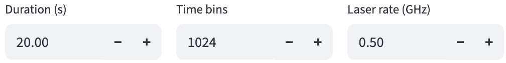
4.1.5 File Suffix
Copied from the file suffix config. Users can edit the file suffixes here.
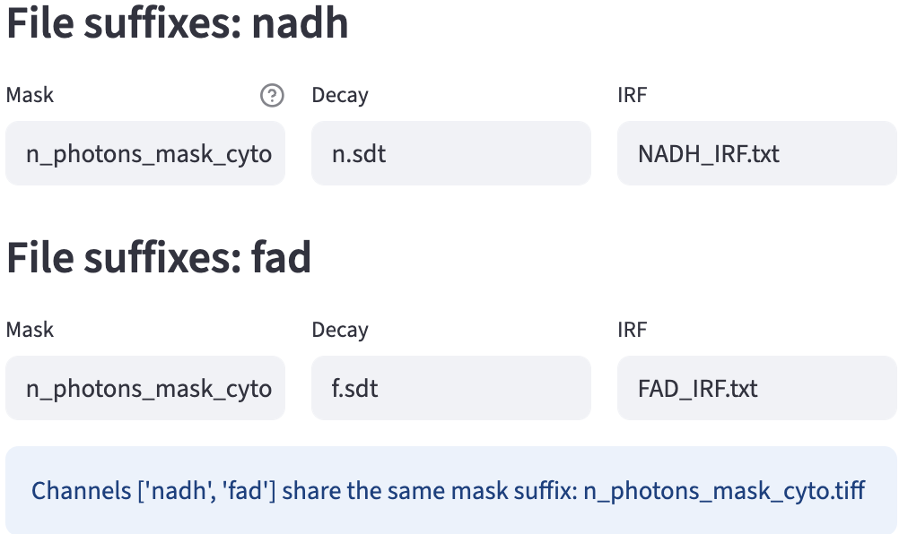
4.1.6 Fluorescence Lifetime Standard
If the selected fit free calibration method is fluorescence lifetime standard, users are asked to specify the fluorescence lifetime standard file path for each channel and the fluorescence lifetime standard’s lifetime, which are copied from the data extraction configuration.
4.1.7 Folder Path
Finally, users can specify the folder path that contains all the required input files.
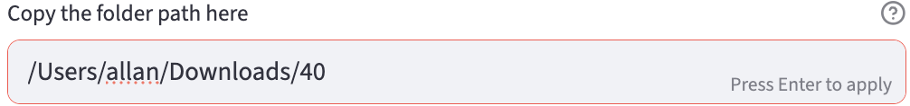
4.2 Metadata Extraction
4.2.1 FOV File Paths
The first step is to find the fields of view:
- It finds all the files recursively in the folder path that ends with the 1st file suffix of the 1st channel.
- The prefix of all the matched files is considered to be the field of view name.
- FOV name = file name - 1st file suffix
Then, it uses the found FOV names to find all other files:
- The file name to search = FOV name + other file suffixes for each file suffix
The only exceptions are the calibration files, because they are not FOV-specific. They will be searched for based on their file suffixes only.
Success
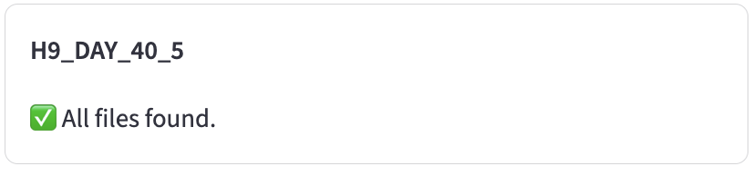
Missing
When it cannot find the file based on the file name (FOV name + file suffix for that file type) inside the folder path, it will complain.
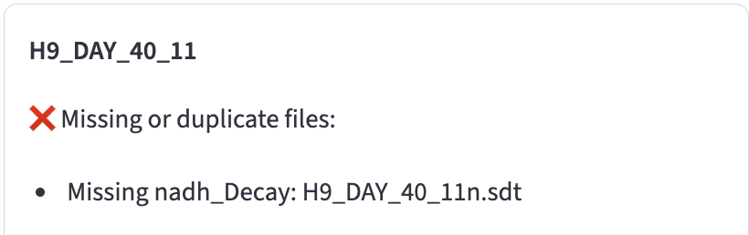
Duplicate
Because the calibration file is not FOV-specific, it will be searched based on the file suffixes only. If there are multiple files that match the same file suffix, FLIM Playground will be confused about which one to use.
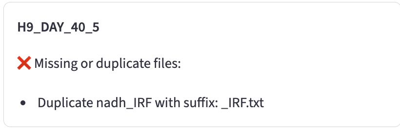
Fields of view with ✅ are loaded successfully 🎆. FOVs with ❌ (if any) will not be recorded.
If the issue persists after renaming the files to match the required prefix, force-quit and relaunch FLIM Playground to clear its internal cache.
4.2.2 Decay Info
If the decay type is 3D/4D decay, FLIM Playground will try to infer the duration and the number of time bins per laser pulse interval from the decay file metadata. It will also check for inconsistencies across all decay files.
Channel Assignment
If the decay file associated with the channel found by the previous step is a 4D array, then FLIM Playground will try to infer the channel number for that channel. For each channel name, it will list all non-empty channels as potential channels to be assigned. If there is only one, the assignment is automatic. If there are multiple, users need to select the channel intended. It will also check for inconsistencies across all decay files about their dimensions and complain if there are any.
Fluorescence Lifetime Standard
If the file path to the fluorescence lifetime standard is specified, FLIM Playground will try to look for and read the file. It expects a tiff or tif file that contains a 3D array, with one of them as the time dimension. It will try to match the time dimension with the time dimension of the decay file. If it cannot find the matching time dimension, it will complain.
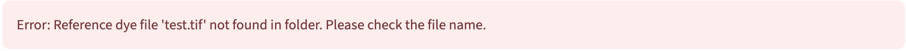 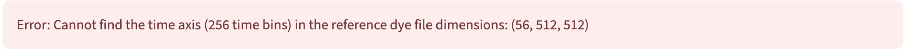
Once the time axis is matched, the file path to the fluorescence lifetime standard, the fluorescence lifetime standard’s lifetime, and the time axis will be recorded.
4.2.3 Result Preview and Export
If there is a non-zero number of FOVs with ✅ and channel assignment and fluorescence lifetime standard checks (if applicable) are passed, a preview of the metadata data sheet will be shown for users to check.
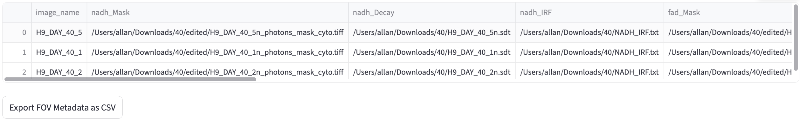
As an example, the following metadata are extracted:
image_name: Theimage_namecolumn is the name of each FOV, which is specified in the fov identifier config.nadh_Mask,nadh_Decay,nadh_IRF,fad_Mask,fad_Decay,fad_IRF: the file paths of the mask, decay, and IRF files for thenadhandfadchannels.nadh_input_type,nadh_imaging_modality,fad_input_type,fad_imaging_modality: the decay type for each channel. If they share the same imaging modality, the input types should be the same. The only imaging modality supported by FLIM Playground isFLIM, therefore the input_type for all channels should be from one of the decay types.nadh_Lifetime fit free,nadh_Intensity morphology,nadh_Lifetime fit,fad_Intensity morphology,fad_Intensity texture,fad_Lifetime fit: feature extractors for each channel.nadh_channel,duration,fad_channel,time_bins,laser_rate: the decay info for each channel and info shared by all channels.
The user can click the Export FOV Metadata as CSV button to export the metadata as a CSV file.